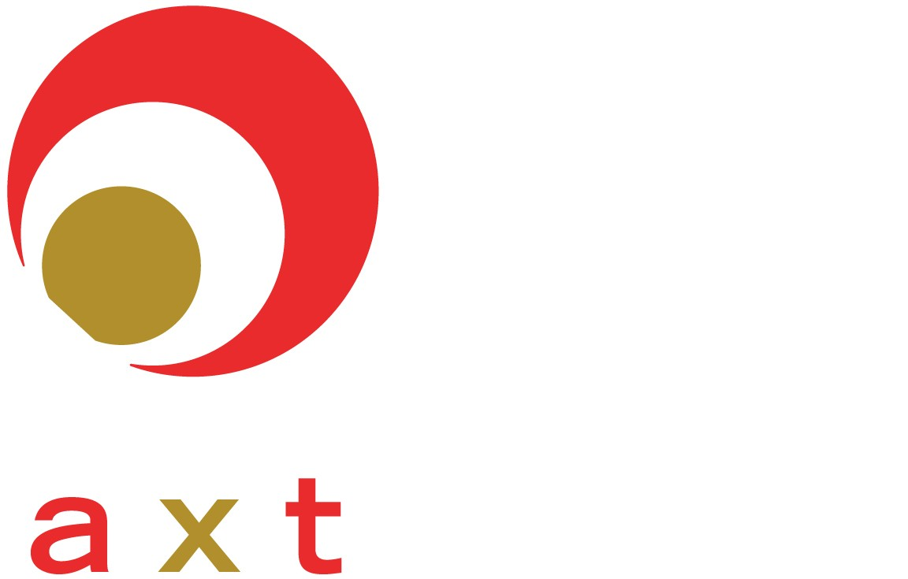

Ranglister Halvledere AXT

AXT
Et blik på de samme fund, ikke en ny score. Sådan virker det
Kort fortalt
Scoren på 55 viser et selskab, hvor prisen er det store problem: aktien er steget ca. 1.189 % på et år og er langt dyrere i forhold til omsætningen end tidligere. Forretningen tjener lidt, pengestrømmen fra driften er negativ, og al produktion af de vigtigste plader ligger i Kina, hvor eksporttilladelser afgør salget. Til gengæld er ordrebogen over 100 mio. dollar. Kursmålet ligger 139 % over kursen.
En god forretning med et reelt spørgsmålstegn: prisen, en revne eller begge dele.
Største fradrag
- Multipler mod egen historik og peers−27
- Kinesisk eksportkontrol−8
- Margin−4
Styrker
- Ordrebog med forudbetaling+3
- Nettokasse+2
Sådan er scoren bygget op
Fra 100 til 55, trin for trin: point trækkes fra for forretningen, prisen og revnerne, lægges til for dokumenterede styrker, og så følger tre datajusteringer.
Hold musen over et trin eller vælg det for at se, hvad der drev det. Trin med fund åbner dem nedenfor.
Nøgletal
Pr. 6 nov. 2026. Analytikernes kursmål er ofte optimistiske; læs opsiden som et fingerpeg, ikke en prognose.
- Pris
- 38.88 USD
- Analytikernes mediankursmål
- 93.00 USD
- Opside til median
- +139.2%
- Analytikere
- 6
- Kursmålsinterval
- 55.00 – 125.00 USD
- 52-ugers ændring
- +327%
- P/E (historisk)
- 70.7
- Forward P/E
- 17.0
- PEG
- n/a
Fund
Hvert fradrag og hvert plus med sin kilde. Åbn et trin for at læse dem.
Forretning
Bliver virksomheden stærkere, ikke bare større? · 3 fund−10 af −30
- −4MarginDriftsmargin kun 3,1 % TTM efter underskud i 2023-2025 (-15 til -28 %); Q2 2026 viste et spring til 44,9 % bruttomargin og 11,1 mio. USD i nettoresultat, men det højeste helårsniveau er en driftsmargin på ca. 9 % (2021-2022).
- −3ROICROIC 0,5 % TTM og maks. 5,4 % i 2021-2025 (negativ i 2023-2025) – langt under kapitalomkostningen.
- −3Indtjeningens kvalitetDriftspengestrømmen er negativ (-5,8 mio. USD TTM) trods overskud, og FCF har været negativ hvert år 2021-TTM; lageret omsættes under én gang om året (lageromsætning 0,97).
Pris
Dagens multipler mod selskabets egen historik og dets sammenlignelige selskaber. · 1 fund−27 af −35
- −27Multipler mod egen historik og peersP/S 35 mod 0,95-2,7 i 2021-2024 (9,9 i 2025); EV/Sales 32,5 mod 1,9-3,0; P/B 5,0 mod 0,4-1,3; forward P/E 42,8 mod 16,9-22 i 2021-2023 og på niveau med Lumentum, selvom AXT er en underleverandør med langt lavere margin. Aktien er +1.189 % på et år.
Revner
Cash flow, kunder, gæld, insidere, guidance og det, der ligger bag hovedtallene. · 6 fund−19 af −35
- −8Kinesisk eksportkontrolKina satte InP-substrater på eksportkontrollisten i februar 2025; tilladelser er givet til kunder i Europa, Japan, UK og Canada, men tilladelser til amerikanske kunder var endnu ikke udstedt. Q3-guidance på 66 mio. USD dækker kun omsætning med eksisterende tilladelser, og ledelsen kan ikke forudsige timing.
- −4UdvandingAktieemission i april 2026 på 8,56 mio. aktier til 64,25 USD (ca. 550 mio. USD brutto); aktietallet +19,5 % på et år.
- −2Tongmei-struktur og governanceTongmei trak sin STAR Market-børsnotering i juni 2026 og går nu efter Hongkong (ca. 1 år); 11 kapitalfonde, der investerede 324 mio. RMB, kan kræve indløsning, og en notering vil udvande AXT's ejerandel af den kinesiske kerneforretning.
- −2InsiderhandelCEO Morris Young har solgt flere gange (bl.a. 30.832 aktier for 1,4 mio. USD i marts 2026), og CFO samt bestyrelsesmedlemmer har også solgt; klyngesalg omkring kapitalrejsningen. Ingen insiderkøb.
- −2KundekoncentrationInP-væksten (64,5 % af Q2-omsætningen) hviler på få laserkunder – langtidsaftaler med Coherent, Lumentum og Casela – som selv er afhængige af få hyperscalere.
- −1
Plus
Kun dokumenterede styrker. · 2 fund+5 af +15
- +3Ordrebog med forudbetalingInP-ordrebog over 100 mio. USD og langtidsaftaler, hvor Casela og Coherent har forudbetalt 22,3 og 25,4 mio. USD; kapaciteten skal op til ca. 60 mio. USD/kvartal ved udgangen af 2026 og 130 mio. ved udgangen af 2027.
- +2NettokasseKontanter 417 mio. USD mod gæld 102 mio., dvs. nettokasse 316 mio. (ca. 7 % af markedsværdien).
Forbehold
Det, scoren ikke fanger, eller hvor dataene er svage.
Også i Halvledere
De højeste scorer i samme branche.